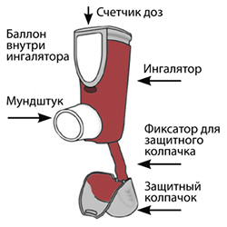
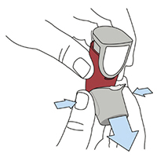
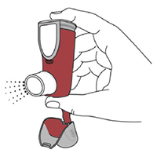
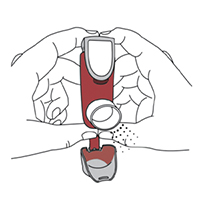
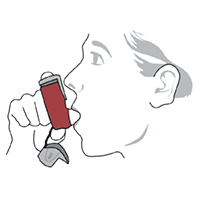
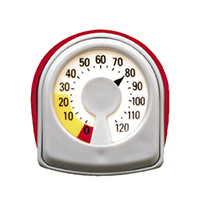
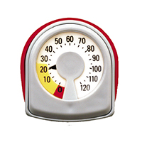

|
 |
| СИМБИКОРТ® РАПИХАЛЕР (SYMBICORT RAPIHALER) budesonide, formoterol аэрозоль д/ингаляций дозир. | ||||||||||||||
|
Клинико-фармакологическая группа: Комбинированный бронхолитический препарат - селективный бета2-адреномиметик + местный глюкокортикоид Номер и дата регистрации: ЛП-005555 от 30.05.19 Код ATX: R03AK07 |
Владелец регистрационного удостоверения: зарегистрировано Представительство: | |||||||||||||
Форма выпуска, состав и упаковка Аэрозоль для ингаляций дозированный; содержимое баллона - твердый остаток белого цвета, свободный от видимых включений, образующийся после испарения пропеллента.
Вспомогательные вещества: повидон К25 - 0.75 мкг, макрогол 1000 - 223.8 мкг, апафлуран 227 - до 74.6 мг. 8 мл (120 доз) - ингаляторы** (1) - пакеты из фольги алюминиевой ламинированной (1) с десикантом - пачки картонные с контролем первого вскрытия. Аэрозоль для ингаляций дозированный; содержимое баллона - твердый остаток белого цвета, свободный от видимых включений, образующийся после испарения пропеллента.
Вспомогательные вещества: повидон К25 - 0.75 мкг, макрогол 1000 - 223.8 мкг, апафлуран 227 - до 74.6 мг. 8 мл (120 доз) - ингаляторы** (1) - пакеты из фольги алюминиевой ламинированной (1) с десикантом - пачки картонные с контролем первого вскрытия. * Для контроля качества лекарственного препарата термин "доза" соответствует одному высвобождению лекарственного препарата. Терапевтическая доза составляет 2 высвобождения препарата. | ||||||||||||||
| ||||||||||||||
Описание препарата основано на официально утвержденной инструкции по применению и утверждено компанией-производителем для издания 2021 г. | ||||||||||||||
Фармакологическое действие |
Фармакокинетика |
Показания |
Режим дозирования |
Побочное действие |
Противопоказания |
Беременность и лактация |
Особые указания |
Передозировка |
Лекарственное взаимодействие |
Условия хранения и сроки годности |
Условия реализации
Фармакологическое действие
Симбикорт® Рапихалер содержит будесонид и формотерол, которые имеют разные механизмы действия и проявляют аддитивный эффект при обструктивных заболеваниях дыхательных путей. Ингалятор содержит суспензию для ингаляций. При нажатии на верхнюю часть ингалятора высвобождается определенное количество суспензии с высокой скоростью. Если пациент делает вдох одновременно с высвобождением препарата, он попадает непосредственно в дыхательные пути. Механизм действия Будесонид Будесонид является глюкокортикоидом, оказывающим местное противовоспалительное действие. Точный механизм противовоспалительного действия ГКС при обструктивных заболеваниях легких полностью не изучен. Специфическая активность будесонида, оцениваемая по его сродству к глюкокортикоидным рецепторам, в 15 раз выше, чем у преднизолона. Очевидный эффект будесонида (снижение концентрации кортизола до 80% от нормального уровня) был установлен для дозы 800 мкг; у некоторых пациентов отмечено значительное снижение концентрации кортизола. Результаты долгосрочного исследования свидетельствуют о том, что дети и подростки, получающие будесонид ингаляционно в низкой или средней дозе, достигают нормального роста во взрослом возрасте. Тем не менее, необходимо учитывать возможность преходящего замедления роста примерно на 1 см во время первого года лечения. Формотерол Формотерол, представленный в виде рацемической смеси, является селективным стимулятором β2-адренорецепторов, оказывающим расслабляющее воздействие на гладкую мускулатуру бронхов у пациентов с обратимой обструкцией дыхательных путей. Действие формотерола начинается быстро (в течение 1-3 мин после ингаляции) и продолжается в течение 12 ч после одной ингаляции. Клиническая эффективность Бронхиальная астма Терапевтическая эквивалентность препаратов Симбикорт® Рапихалер и Симбикорт® Турбухалер® была установлена в ходе двух исследований эффективности и безопасности применения этих препаратов в средних и высоких дозах у пациентов с бронхиальной астмой в возрасте от 6 до 79 лет. Эта эквивалентность была подтверждена результатами долгосрочного исследования, которые свидетельствуют, что профиль безопасности и переносимость препаратов Симбикорт® Рапихалер и Симбикорт® Турбухалер® являются сопоставимыми. Результаты клинических исследований показали, что добавление формотерола к будесониду уменьшало выраженность симптомов бронхиальной астмы, улучшало функцию легких и снижало частоту обострений. При назначении препарата Симбикорт® Рапихалер в качестве поддерживающей терапии взрослым пациентам его эффект в отношении функции легких был аналогичным эффекту будесонида и формотерола, применяемых в качестве отдельных препаратов в форме порошка для ингаляций, и превосходил эффект будесонида, применяемого в виде монотерапии, у взрослых и детей. При всех указанных видах терапии дополнительно применяли по потребности короткодействующий агонист β2-адренорецепторов. Снижение противоастматического эффекта с течением времени не отмечалось. ХОБЛ (хроническая обструктивная болезнь легких) Эффективность и безопасность препарата Симбикорт® Рапихалер у пациентов с ХОБЛ средней и тяжелой степени тяжести ХОБЛ (пребронходилатационный объем форсированного выдоха за первую секунду (ОФВ1) ≤50% от должного значения) изучались в двух исследованиях продолжительностью 12 и 6 месяцев (исследования 001 и 002). В обоих исследованиях изучали эффективность препарата Симбикорт® Рапихалер 160 мкг + 4.5 мкг/доза по сравнению с плацебо и формотеролом Турбухалер® 4.5 мкг; в исследовании 002 также сравнивали эффективность препарата Симбикорт® Рапихалер 160 мкг + 4.5 мкг/доза с будесонидом 160 мкг в форме аэрозоля для ингаляций дозированного. Препараты применялись по 2 ингаляции 2 раза/сут. Из 1964 и 1704 пациентов с ХОБЛ, в основном, тяжелой степени, рандомизированных в этих исследованиях, 494 и 277 пациентов получали Симбикорт® Рапихалер 160 мкг + 4.5 мкг/доза. Средний возраст пациентов в этих исследованиях составил 63 года, до начала лечения значение ОФВ1 составило, в среднем, 1.04-1.05 л, или 34% от должной величины. Исследование 001. В этом исследовании эффективность препарата в течение 12 месяцев оценивалась с использованием первичной переменной эффективности, определяемой как изменение среднего значения ОФВ1, который оценивался до ингаляции и спустя 1 ч после применения препарата на протяжении периода лечения по отношению к исходным значениям. На фоне терапии препаратом Симбикорт® Рапихалер 160 мкг + 4.5 мкг/доза было отмечено значимое увеличение значения ОФВ1, измеренного за 1 ч до ингаляции, на 0.04 л (p=0.008) по сравнению с терапией формотеролом, и на 0.09 л (р<0.001) по сравнению с плацебо. На протяжении всего периода лечения в группе терапии препаратом Симбикорт® Рапихалер 160 мкг + 4.5 мкг/доза отмечалось значимое увеличение ОФВ1, измеряемого через 1 ч после ингаляции, на 0.03 л (р=0.023) по сравнению с формотеролом и на 0.18 л (p<0.001) по сравнению с плацебо. В подгруппе пациентов (n=491) были проведены серийные измерения ОФВ1 в течение 12 ч. В конце периода лечения начало бронходилатации (увеличение ОФВ1 более чем на 15%) у пациентов, получавших Симбикорт® Рапихалер 160 мкг + 4.5 мкг/доза (n=121), наблюдалось, в среднем, через 5 мин после ингаляции. Максимальное увеличение ОФВ1 наблюдалось спустя примерно 2 ч после ингаляции, клинически значимое улучшение этого показателя сохранялось на протяжении 12 ч. Применение препарата Симбикорт® Рапихалер 160 мкг + 4.5 мкг/доза значимо сократило количество тяжелых обострений: на 37% (p<0.001) по сравнению с плацебо и на 25% (р=0.004) по сравнению с формотеролом (тяжелое обострение было определено как ухудшение ХОБЛ, потребовавшее перорального приема ГКС и/или госпитализации). По сравнению с плацебо время до наступления первого тяжелого обострения ХОБЛ при применении препарата Симбикорт® Рапихалер 160 мкг + 4.5 мкг/доза значимо увеличивалось, при этом непосредственный риск тяжелого обострения ХОБЛ снижался на 26% (р=0.009). На фоне терапии препаратом Симбикорт® Рапихалер 160 мкг + 4.5 мкг/доза отмечалось статистически значимое улучшение качества жизни пациентов по сравнению с плацебо (оценка по Респираторному опроснику госпиталя Св. Георгия; -2.39 единиц; р=0.006). Исследование 002. В этом исследовании эффективность препарата в течение 6 месяцев оценивалась с использованием первичной переменной эффективности, определяемой как изменение среднего значения ОФВ1, который оценивался до ингаляции и спустя 1 ч после применения препарата на протяжении периода лечения по отношению к исходным значениям. На фоне терапии препаратом Симбикорт® Рапихалер 160 мкг + 4.5 мкг/доза было отмечено значимое увеличение значения ОФВ1, измеренного за 1 ч до ингаляции, на 0.04 л (p=0.026) по сравнению с терапией формотеролом, и на 0.08 л (р<0.001) по сравнению с плацебо и будесонидом. В группе терапии препаратом Симбикорт® Рапихалер 160 мкг + 4.5 мкг/доза отмечалось значимое увеличение ОФВ1, измеряемого через 1 ч после ингаляции, на 0.04 л (р=0.039) по сравнению с формотеролом и на 0.17 л (p<0.001) по сравнению с плацебо и будесонидом. Мощность исследования 002 была недостаточной для оценки влияния на частоту тяжелых обострений ХОБЛ. Значения, полученные в терапевтических группах, согласуются с результатами исследования 001, хотя различия не достигли статистической значимости. Так, число обострений при приеме препарата Симбикорт® Рапихалер 160 мкг + 4.5 мкг/доза сократилось на 20% по сравнению с плацебо и формотеролом. В подгруппе пациентов (n=618) были проведены серийные измерения ОФВ1 в течение 12 ч. В конце периода лечения начало бронходилатации (увеличение ОФВ1 более чем на 15%) у пациентов, получавших Симбикорт® Рапихалер 160 мкг + 4.5 мкг/доза (n=101), наблюдалось, в среднем, через 5 мин после ингаляции. Максимальное увеличение ОФВ1 наблюдалось спустя примерно 2 ч после ингаляции, клинически значимое улучшение этого показателя сохранялось на протяжении 12 ч. На фоне терапии препаратом Симбикорт® Рапихалер 160 мкг + 4.5 мкг/доза отмечалось статистически значимое улучшение качества жизни пациентов по сравнению с плацебо, будесонидом и формотеролом (оценка по Респираторному опроснику госпиталя Св. Георгия): плацебо -3.12 единиц (р=0.003), будесонид -2.42 единицы (р=0.024), формотерол -2.56 единиц (р=0.017). Фармакокинетика
Фармакокинетические параметры будесонида и формотерола при их ингаляционном применении в виде отдельных препаратов и при применении препарата Симбикорт® Рапихалер были сопоставимыми. Признаков фармакокинетического взаимодействия между будесонидом и формотеролом не отмечалось. Всасывание Для будесонида при применении в составе комбинированного препарата AUC была несколько больше, абсорбция происходила быстрее и Cmax в плазме была выше. Для формотерола при применении в составе комбинированного препарата Cmax в плазме была несколько ниже. Будесонид При применении будесонида в форме аэрозоля для ингаляций дозированного (Рапихалер) в легкие попадает примерно 25-30% отмеренной дозы. После ингаляции одной дозы будесонида 800 мкг Cmax в плазме крови достигает 4 нмоль/л в течение 30 мин. Системная биодоступность будесонида, доставленного с помощью аэрозоля для ингаляций дозированного (Рапихалер), составляет приблизительно 38% отмеренной дозы. Параметры фармакокинетики будесонида дозозависимы при его применении в клинически значимых дозах. Формотерол Доставленный в виде ингаляции формотерол быстро абсорбируется, Cmax в плазме крови достигается в течение 10 мин после ингаляции. Примерно 21-37% отмеренной дозы достигает легких при применении аэрозоля для ингаляций дозированного (Рапихалер). Системная биодоступность после ингаляции составляет примерно 46% отмеренной дозы. Распределение Будесонид Vd будесонида составляет приблизительно 3 л/кг. Связывание с белками плазмы крови составляет, в среднем, 90%. Формотерол Vd формотерола составляет приблизительно 4 л/кг. Связывание с белками плазмы крови составляет, в среднем, 50%. Метаболизм Признаков взаимодействия на уровне метаболизма или реакций замещения между будесонидом и формотеролом не отмечено. Будесонид Будесонид подвергается существенной биотрансформации (порядка 90%) при "первом прохождении" через печень с образованием метаболитов с низкой глюкокортикоидной активностью. Глюкокортикоидная активность основных метаболитов, 6β-гидрокси-будесонида и 16α-гидрокси-преднизолона, составляет менее 1% глюкокортикоидной активности будесонида. Метаболизм будесонида происходит, главным образом, с участием изофермента цитохрома Р450 CYP3A4. Формотерол Метаболизм формотерола происходит путем прямой глюкуронизации и образования O-деметилированных метаболитов. Метаболиты, в основном, являются неактивными конъюгатами. Выведение Будесонид Метаболиты будесонида выводятся почками в неизмененном виде или в конъюгированной форме. В моче отмечают незначительное количество неизменного будесонида. У взрослых здоровых добровольцев будесонид имеет высокий системный клиренс (приблизительно 1.2 л/мин). Т1/2 составляет, в среднем 4 ч, после в/в введения. Формотерол Формотерол выводится преимущественно в метаболизированной форме. 6-10% доставляемой дозы выводится в неизмененном состоянии через почки; приблизительно 20% дозы, введенной в/в, выводится через почки в неизменном виде. Формотерол имеет высокий системный клиренс (приблизительно 1.4 л/мин). Т1/2 составляет, в среднем, 17 ч. Фармакокинетика у особых групп пациентов Фармакокинетические параметры при назначении комбинированного препарата будесонида и формотерола у детей не изучены. Тем не менее, предполагается, что фармакокинетические параметры будесонида и формотерола у детей не отличаются от таковых у взрослых пациентов. Фармакокинетика формотерола и будесонида у пациентов с нарушением функции почек не изучена. Фармакокинетика формотерола и будесонида у пациентов с нарушением функции печени не изучена. Выведение будесонида и формотерола происходит, главным образом, в виде метаболитов, поэтому выведение веществ у пациентов с тяжелым циррозом печени может замедляться. Показания
Режим дозирования
Для ингаляционного применения. Препарат Симбикорт® Рапихалер поступает непосредственно в легкие после ингаляции, поэтому пациента необходимо обучить правильному использованию ингалятора (см. подраздел "Инструкция по использованию препарата Симбикорт® Рапихалер"). Пациента следует информировать о необходимости регулярно использовать препарат Симбикорт® Рапихалер, т.е. продолжать прием даже при отсутствии симптомов заболевания, чтобы достичь наибольшего терапевтического эффекта. Бронхиальная астма Доза препарата Симбикорт® Рапихалер должна регулярно контролироваться лечащим врачом, который корректирует ее индивидуально в зависимости от тяжести заболевания в соответствии с действующими рекомендациями. Первоначальную дозу подбирают для достижения эффективного контроля симптомов. После достижения желаемого клинического эффекта дозу следует постепенно снижать до минимальной дозы, позволяющей оптимально контролировать симптомы бронхиальной астмы. Таким образом, впоследствии возможен переход к терапии только ингаляционным ГКС. При прекращении лечения препаратом Симбикорт® Рапихалер рекомендуется постепенно снижать дозу. В случае тяжелой бронхиальной астмы необходим регулярный врачебный контроль, т.к. возможно возникновение опасных для жизни ситуаций. У пациентов с тяжелой бронхиальной астмой отмечаются постоянные симптомы заболевания, частые обострения, а значения максимальной скорости выдоха составляют менее 60% от нормального значения, варьируют в пределах более 30% и не нормализуются, несмотря на прием бронходилататоров. Таким пациентам назначают ингаляционные ГКС в высоких дозах или пероральные ГКС. При внезапном ухудшении симптомов возможно увеличение дозы ГКС под контролем врача. При этом увеличение дозы ингаляционного ГКС не должно достигаться за счет более частого применения комбинированного препарата. При нестабильном течении бронхиальной астмы возможен переход на терапию монопрепаратами. Рекомендации по применению препарата Симбикорт® Рапихалер у пациентов, получающих пероральные ГКС, приведены в разделе "Особые указания". Дозы Бронхиальная астма Пациенты принимают поддерживающую суточную дозу препарата Симбикорт® Рапихалер и, при необходимости, быстродействующий бронходилататор для купирования симптомов. Дети в возрасте от 6 до 11 лет Симбикорт® Рапихалер 80 мкг + 4.5 мкг/доза: 2 ингаляции 2 раза/сут. Максимальная суточная доза составляет 4 ингаляции по 80 мкг + 4.5 мкг/доза. Дети в возрасте от 12 до 17 лет Симбикорт® Рапихалер 80 мкг + 4.5 мкг/доза: 2 ингаляции 1-2 раза/сут. В случае усиления симптомов можно временно увеличить дозу (не более 1 недели) до 4 ингаляций 2 раза/сут. Симбикорт® Рапихалер 160 мкг + 4.5 мкг/доза: 2 ингаляции 1-2 раза/сут. В случае усиления симптомов можно временно увеличить дозу (не более 1 недели) до 4 ингаляций 2 раза/сут. Взрослые (от 18 лет) Симбикорт® Рапихалер 80 мкг + 4.5 мкг/доза: 2 ингаляции 1-2 раза/сут. В случае усиления симптомов можно увеличить дозу до 4 ингаляций 2 раза/сут временно или в качестве поддерживающей дозы. Симбикорт® Рапихалер 160 мкг + 4.5 мкг/доза: 2 ингаляции 1-2 раза/сут. В случае усиления симптомов можно временно увеличить дозу до 4 ингаляций 2 раза/сут временно или в качестве поддерживающей дозы. Статистически была установлена эквивалентность препаратов Симбикорт® Турбухалер® и Симбикорт® Рапихалер при применении по 2 ингаляции 80 мкг + 4.5 мкг/доза или 160 мкг + 4.5 мкг/доза 2 раза/сут. Тем не менее, эта эквивалентность не была подтверждена для всех дозировок. Следует информировать пациентов о необходимости всегда иметь при себе быстродействующий бронходилататор для купирования приступов. Частое использование препарата для купирования приступов указывает на ухудшение бронхиальной астмы и требует коррекции терапии. ХОБЛ Симбикорт® Рапихалер 160 мкг + 4.5 мкг/доза: 2 ингаляции 2 раза/сут. Максимальная суточная доза - 4 ингаляции. Симбикорт® Рапихалер 80 мкг + 4.5 мкг/доза не применяется (не зарегистрирован) для лечения ХОБЛ. Применение у особых групп пациентов Отсутствуют данные о применении препарата Симбикорт® Рапихалер у пациентов с нарушением функции печени и почек. Выведение будесонида и формотерола происходит, главным образом, путем метаболизма в печени, поэтому возможно увеличение экспозиции у пациентов с тяжелым заболеванием печени. Такие пациенты должны находиться под пристальным наблюдением. Не требуется корректировать дозу пациентам пожилого возраста. Инструкция по использованию препарата Симбикорт® Рапихалер Перед началом применения препарата пациенту следует внимательно прочитать данный раздел. Ингалятор Ингалятор поставляется в собранном виде. Не следует разбирать ингалятор на составные части. При ослаблении соединения частей ингалятора необходимо закрепить их и продолжить использовать ингалятор в соответствии с назначением врача.  Подготовка ингалятора к использованию Перед первым использованием следует вынуть ингалятор из пакета из ламинированной алюминиевой фольги. Пакет можно выбросить. Перед первым использованием ингалятора, а также если ингалятор не использовался в течение недели или более, или если ингалятор уронили, необходимо подготовить его к использованию: осторожно встряхнуть и сделать 2 высвобождения препарата в воздух. Как правильно держать ингалятор при использовании   или  Использование ингалятора 1. Перед каждым использованием следует осторожно встряхнуть ингалятор. 2. Снять защитный колпачок с мундштука, нажав на него с обеих сторон и потянув. 3. Следует держать ингалятор вертикально перед полостью рта, установив большой палец (или большие пальцы обеих рук) на основание ингалятора, а указательный палец (указательные пальцы) на верхнюю часть ингалятора. Затем сделать максимально глубокий выдох, расположить мундштук ингалятора между зубами и плотно обхватить его губами. 4. Затем необходимо сделать медленный глубокий вдох через рот. В начале вдоха нажать на дозирующее устройство ингалятора для высвобождения препарата. 5. После глубокого вдоха следует задержать дыхание примерно на 10 сек или так долго, чтобы это было комфортно. Затем убрать ингалятор из полости рта, а палец – с верхней части ингалятора. 6. Следуя назначению врача, сделать еще одну ингаляцию – осторожно встряхнуть ингалятор и повторить шаги 3-5. 7. Надеть защитный колпачок на мундштук и закрыть его, чтобы предотвратить попадание пыли и других загрязнений; при этом можно услышать тихий щелчок. 8. Прополоскать полость рта водой, чтобы удалить остатки препарата.  Чистка ингалятора Необходимо регулярно, как минимум, раз в неделю, чистить мундштук ингалятора следующим образом: 1. Снять защитный колпачок с мундштука. 2. Протереть мундштук внутри и снаружи чистой сухой тканью. 3. Закрыть мундштук защитным колпачком. 4. Не погружать ингалятор в воду. 5. Не разбирать ингалятор на составные части. Счетчик доз


Следует помнить, что лекарственный препарат предназначен для индивидуального использования. Не следует передавать препарат другим лицам, даже при наличии у них тех же симптомов. Это может причинить им вред. Побочное действие
На фоне совместного применения будесонида и формотерола не было отмечено увеличения частоты возникновения побочных реакций. Наиболее частыми побочными реакциями, связанными с приемом препарата, являются такие фармакологически ожидаемые для бета2-адреномиметиков нежелательные явления, как тремор и учащенное сердцебиение; симптомы обычно имеют умеренную степень выраженности и проходят через несколько дней после начала лечения. В ходе применения будесонида при ХОБЛ кровоподтеки и пневмония встречались с частотой 10% и 6%, соответственно, по сравнению с 4% и 3% в группе с плацебо (р<0.001 и р<0.01 соответственно). Поскольку препарат Симбикорт® Рапихалер содержит два действующих вещества, будесонид и формотерол, при его применении могут возникать нежелательные эффекты, по своему характеру и интенсивности аналогичные эффектам, описанным для этих двух препаратов при их раздельном применении. В клинических исследованиях заболевания дыхательной системы, в основном бронхит, назофарингит, синусит, вирусная инфекция верхних дыхательных путей, в группе пациентов, получавших препарат Симбикорт® 160 мкг + 4.5 мкг/доза, наблюдались не менее чем у 3% пациентов и чаще, чем в группе плацебо. Нежелательные реакции, связанные с применением будесонида или формотерола, представлены ниже с использованием предпочтительных терминов по классам систем и органов и с указанием абсолютной частоты. Частота возникновения реакций представлена в следующей градации: очень часто (≥1/10), часто (≥1/100, <1/10), нечасто (≥1/1000, <1/100), редко (≥1/10000, <1/1000), очень редко (<1/10000). Со стороны нервной системы: часто - головная боль, тремор; нечасто - головокружение; очень редко - изменение вкусовой восприимчивости. Психические нарушения: нечасто - психомоторное возбуждение, тревожность, нарушения сна, беспокойство, нервозность; очень редко - депрессия, изменение поведения (преимущественно у детей). Инфекции и инвазии: часто - орофарингеальный кандидоз. Со стороны иммунной системы: реакции гиперчувствительности немедленного и замедленного типа (например, дерматит, экзантема, крапивница, зуд, контактная экзема, ангионевротический отек и анафилактическая реакция). Со стороны обмена веществ: очень редко - гипергликемия, гипокалиемия, признаки и симптомы системных эффектов глюкокортикоидов (в т.ч. снижение функции коры надпочечников). Со стороны сердечно-сосудистой системы: часто - учащенное сердцебиение; нечасто - тахикардия; нарушения сердечного ритма (например, мерцательная аритмия, наджелудочковая тахикардия, экстрасистолия); очень редко - стенокардия, изменения АД. Со стороны дыхательной системы: часто - кашель, осиплость голоса, легкое раздражение слизистой оболочки глотки с нарушениями глотания; редко - бронхоспазм; очень редко - парадоксальный бронхоспазм. Со стороны костно-мышечной системы: нечасто - мышечные судороги, боли в мышцах. Со стороны пищеварительной системы: нечасто - тошнота. Со стороны кожи и подкожной клетчатки: редко - кровоподтеки. Возможно развитие системных эффектов ингаляционных ГКС (надпочечниковая недостаточность, гиперкортицизм, снижение скорости роста у детей и подростков, катаракта, глаукома, повышение внутриглазного давления в редких случаях), особенно при длительном применении препарата в высоких дозах. Применение бета2-адреномиметиков может приводить к увеличению содержания в крови инсулина, свободных жирных кислот, глицерола и кетоновых тел. Противопоказания
С осторожностью: туберкулез легких (активная или неактивная форма), грибковые, вирусные или бактериальные инфекции органов дыхания, тиреотоксикоз, феохромоцитома, сахарный диабет, снижение функции коры надпочечников, неконтролируемая гипокалиемия, гипертрофическая обструктивная кардиомиопатия, идиопатический гипертрофический субаортальный стеноз, тяжелая артериальная гипертензия, аневризма любой локализации или другие тяжелые сердечно-сосудистые заболевания (ИБС, тахиаритмия или сердечная недостаточность тяжелой степени), удлинение интервала QT (прием формотерола может вызывать удлинение интервала QTc). Применение при беременности и кормлении грудью
Беременность Клинические исследования по изучению применения препарата Симбикорт® Рапихалер или будесонида в комбинации с формотеролом в период беременности не проводились. В доклинических исследованиях эмбриофетального развития при ингаляционном введении препарата Симбикорт® Рапихалер крысам не было выявлено дополнительных эффектов, обусловленных комбинированным применением действующих веществ, или эффектов, обусловленных вспомогательными веществами. В доклинических исследованиях было выявлено нежелательное воздействие будесонида на развитие плода. С другой стороны, клинические наблюдения женщин в период беременности не выявили повышенного риска пороков развития при применении будесонида. Исследования репродуктивной функции, проводимые на животных, выявили нежелательное воздействие на плод при очень высоких системных экспозициях формотерола. Адекватных клинических данных относительно применения формотерола у беременных женщин нет. Соответственно, применение препарата Симбикорт® Рапихалер при беременности возможно, только если потенциальная польза для матери превышает потенциальный риск для плода. В частности, в I триместре и незадолго до родов Симбикорт® Рапихалер можно использовать только при наличии серьезных оснований для назначения. По многочисленным доступным научным данным, риск нежелательного воздействия на плод при случайном приеме минимален. Период грудного вскармливания В исследовании клинической фармакологии было показано, что будесонид при ингаляционном введении проникает в материнское молоко. Однако в крови ребенка, получающего грудное вскармливание, будесонид не был выявлен. На основании фармакокинетических параметров можно полагать, что концентрация в плазме крови ребенка достигает менее 0.17% от концентрации в плазме крови матери. Таким образом, не ожидается воздействия будесонида на ребенка, мать которого принимает препарат Симбикорт® Рапихалер в терапевтических дозах. Неизвестно, проникает ли формотерол в материнское молоко. У самок крыс в молоке обнаруживали формотерол в небольшом количестве. Применять препарат Симбикорт® Рапихалер в период грудного вскармливания возможно только при наличии серьезных оснований для назначения. Особые указания
Рекомендуется постепенно уменьшать дозу препарата перед прекращением лечения и не рекомендуется резко отменять лечение. Симбикорт® Рапихалер не предназначен для первоначального подбора терапии при бронхиальной астме. При недостаточной эффективности терапии необходима консультация врача. Неожиданное и прогрессирующее ухудшение контроля симптомов ХОБЛ является потенциально угрожающим жизни состоянием и требует срочного медицинского вмешательства. В данной ситуации следует рассмотреть возможность повышения дозы ГКС, например, назначение курса пероральных ГКС, или лечения антибиотиками в случае присоединения инфекции. В масштабном американском исследовании была проведена оценка безопасности использования салметерола, другого агониста β2-адренорецепторов, по сравнению с плацебо в дополнение к обычной терапии. Было показано увеличение частоты летальных исходов, обусловленных бронхиальной астмой, у пациентов, получавших салметерол, по сравнению с пациентами, получавшими плацебо (13/13176 [0.10%] против 3/13179 [0.02%]). Тем не менее, к настоящему моменту отсутствуют результаты исследований по оценке частоты летальных исходов, обусловленных бронхиальной астмой, у пациентов, получающих формотерол, действующее вещество препарата Симбикорт® Рапихалер. Возможно, что повышение риска летального исхода, обусловленного бронхиальной астмой, при лечении салметеролом связано с класс-специфическим эффектом агонистов β2-адренорецепторов, к которым относится формотерол. Пациентам рекомендуется постоянно иметь при себе ингаляционный препарат для купирования приступов. Следует обратить внимание пациента на необходимость регулярного приема поддерживающей дозы препарата Симбикорт® Рапихалер в соответствии с назначением врача, даже в случаях отсутствия симптомов заболевания. Если симптомы бронхиальной астмы поддаются контролю, можно постепенно снижать дозу препарата Симбикорт® Рапихалер, при этом важно постоянно следить за состоянием пациентов. Следует назначать наименьшую эффективную дозу препарата Симбикорт® Рапихалер. Лечение препаратом Симбикорт® Рапихалер не следует начинать в период обострения или значительного ухудшения течения бронхиальной астмы. Во время терапии препаратом Симбикорт® Рапихалер могут возникать обострения бронхиальной астмы и развиваться серьезные нежелательные явления, связанные с бронхиальной астмой. Пациентам следует продолжать лечение, но обратиться за медицинской помощью при отсутствии контроля над симптомами бронхиальной астмы или в случае ухудшения состояния после начала терапии. Данные клинических исследований препарата Симбикорт® у пациентов с ХОБЛ с пребронходилатационным ОФВ1 <50% от должного и с постбронходилатационным ОФВ1 <70% от должного отсутствуют. Как и при любой другой ингаляционной терапии, возможно возникновение парадоксального бронхоспазма с немедленным усилением хрипов и одышки после приема дозы препарата. В таком случае следует прекратить терапию препаратом Симбикорт®, пересмотреть тактику лечения и, при необходимости, назначить альтернативную терапию. При парадоксальном бронхоспазме необходимо безотлагательно применить быстродействующий ингаляционный бронходилататор. Системное действие может проявиться при приеме любых ингаляционных ГКС, особенно при применении препаратов в высоких дозах в течение длительного периода времени. Проявление системного действия менее вероятно при проведении ингаляционной терапии, чем при применении пероральных ГКС. К возможным системным эффектам относятся подавление функции надпочечников, задержка роста у детей и подростков, снижение минеральной плотности костной ткани, катаракта и глаукома. Рекомендуется регулярно мониторировать рост детей, длительно получающих ингаляционные ГКС. В случае установленной задержки роста следует пересмотреть терапию с целью снижения дозы ингаляционного ГКС. Необходимо тщательно оценивать соотношение пользы терапии ГКС и возможного риска задержки роста. Основываясь на ограниченных данных исследований о длительном приеме ГКС, можно предположить, что большинство детей и подростков, получающих терапию ингаляционным будесонидом, в конечном итоге достигнут нормальных для взрослых показателей роста. Вместе с тем, сообщалось о небольшой кратковременной задержке роста, в основном, в первый год лечения. Дети, принимающие иммунодепрессанты, в т.ч. ГКС, более подвержены инфекционным заболеваниям, чем здоровые дети. Например, ветряная оспа и корь могут протекать в очень тяжелой форме и иногда заканчиваться летальным исходом. Необходимо соблюдать особую осторожность и не подвергать детей и взрослых с ослабленным иммунитетом риску заражения вирусами. При риске заражения ветряной оспой назначают лечение иммуноглобулинами местно или смесью иммуноглобулинов в/в. При наличии признаков и симптомов ветряной оспы необходимо назначать противовирусное лечение. Необходимо продолжать антиастматическую терапию в случае вирусной инфекции верхних дыхательных путей. Тем пациентам, у которых бывают тяжелые обострения бронхиальной астмы на фоне вирусной инфекции дыхательных путей, необходимо назначать кратковременное пероральное лечение кортикостероидами. Из-за потенциально возможного действия ингаляционных ГКС на минеральную плотность костной ткани следует уделять особое внимание пациентам с факторами риска остеопороза, принимающим высокие дозы препарата в течение длительного периода. Исследования длительного применения ингаляционного будесонида у детей в средней суточной дозе 400 мкг (отмеренная доза) или взрослых в суточной дозе 800 мкг (отмеренная доза) не показали значимого действия на минеральную плотность костной ткани. Нет данных относительно действия более высоких доз препарата Симбикорт® на минеральную плотность костной ткани. Если есть основания полагать, что на фоне предшествующей системной терапии ГКС была нарушена функция надпочечников, следует принять меры предосторожности при переводе пациентов на лечение препаратом Симбикорт®. Преимущества ингаляционной терапии будесонидом, как правило, сводят к минимуму необходимость приема пероральных ГКС, однако у пациентов, прекращающих терапию пероральными ГКС, в течение длительного времени может сохраняться недостаточная функция надпочечников. Пациенты, которые в прошлом нуждались в неотложном приеме ГКС в высоких дозах или получали длительное лечение ингаляционными ГКС в высоких дозах, также могут относиться к этой группе риска. Необходимо предусмотреть дополнительное назначение ГКС в период стресса или хирургического вмешательства. Рекомендуется проинструктировать пациента о необходимости полоскать рот водой после ингаляций для уменьшения риска развития кандидоза слизистой оболочки полости рта и глотки. Также необходимо полоскать рот водой после проведения ингаляций в случае развития кандидоза слизистой оболочки полости рта и глотки. Следует соблюдать меры предосторожности при лечении пациентов с удлиненным интервалом QTс. Прием формотерола может вызвать удлинение интервала QTс. Следует пересмотреть необходимость применения и дозу ингаляционного ГКС у пациентов с активной или неактивной формами туберкулеза легких, грибковыми, вирусными или бактериальными инфекциями органов дыхания. При совместном назначении бета2-адреномиметиков с препаратами, которые могут вызвать или усилить гипокалиемический эффект, например, производные ксантина, стероиды или диуретики, возможно усиление гипокалиемического эффекта бета2-адреномиметиков. Следует соблюдать особые меры предосторожности у пациентов с нестабильной бронхиальной астмой, применяющих бронходилататоры короткого действия, т.к. риск развития гипокалиемии увеличивается на фоне гипоксии. В таких случаях рекомендуется контролировать концентрацию калия в сыворотке. Применение формотерола в дозе 90 мкг в течение 3 ч пациентами с острой бронхиальной обструкцией было безопасным. В период лечения следует контролировать концентрацию глюкозы в крови у пациентов с сахарным диабетом. Клинические исследования и мета-анализы показали, что применение ингаляционных ГКС при ХОБЛ может привести к повышению риска пневмонии. Однако абсолютный риск при применении будесонида небольшой. Мета-анализ 11 двойных слепых исследований с участием 10570 пациентов с ХОБЛ не продемонстрировал статистически значимого повышения риска пневмонии у пациентов, получавших будесонид (в т.ч. в комбинации с формотеролом), по сравнению с пациентами, получавшими терапию без будесонида (плацебо или формотерол). Частота развития серьезного нежелательного явления пневмонии составила 1.9% в год при терапии, включающей будесонид, и 1.5% в год – при терапии без будесонида. Объединенное соотношение рисков при сравнении терапии, включающей будесонид, с терапией без будесонида составило 1.15 (95% доверительный интервал (ДИ): 0.83, 1.57). Объединенное соотношение рисков при сравнении будесонида/формотерола с формотеролом или плацебо составило 1.00 (95% ДИ: 0.69, 1.44). Причинно-следственная связь развития пневмонии с применением препаратов, содержащих будесонид, не установлена. Влияние на способность к управлению транспортными средствами и механизмами Ожидается, что препарат Симбикорт® Рапихалер не оказывает влияния на способность к управлению транспортными средствами и механизмами. Передозировка
Будесонид Ингаляционное применение в дозах, превышающих рекомендуемые, может привести к кратковременному или продолжительному угнетению гипоталамо-гипофизарно-надпочечниковой системы. При острой передозировке будесонида, даже в случае применения чрезмерных доз, не ожидается клинически значимых эффектов. При хроническом применении препарата в чрезмерных дозах может проявиться системное действие ГКС. Формотерол При передозировке формотерола вероятно развитие эффектов, типичных для агонистов β2-адренорецепторов: тремор, головная боль, тошнота, рвота, учащенное сердцебиение, тахикардия, тахиаритмия, стенокардия, а также повышение или понижение АД, нервозность, мышечные судороги, головокружение, метаболический ацидоз, гипокалиемия и гипергликемия. В случае передозировки формотерола рекомендуется симптоматическое поддерживающее лечение. Тяжелая передозировка Если с момента перорального приема препарата в высокой дозе прошло менее часа, и не исключается тяжелая интоксикация, рекомендуются следующие мероприятия: промывание желудка и последующий прием активированного угля (при необходимости – неоднократно), контроль и коррекция нарушений электролитного состава и кислотно-щелочного баланса, введение кардиоселективных бета-адреноблокаторов с осторожностью, в связи с возможным развитием приступа бронхиальной астмы. Лекарственное взаимодействие
Прием 200 мг кетоконазола 1 раз/сут повышал плазменную концентрацию будесонида (однократная пероральная доза 3 мг) при их совместном применении, в среднем, в 6 раз. При назначении кетоконазола через 12 ч после приема будесонида концентрация в плазме последнего повышалась, в среднем, в 3 раза. Информация о подобном взаимодействии с ингаляционным будесонидом в высоких дозах отсутствует, однако возможно значительное повышение концентрации препарата в плазме крови. Рекомендации по коррекции дозы отсутствуют, следует избегать вышеописанной комбинации препаратов. Если это невозможно, временной интервал между применением ингибитора изофермента цитохрома CYP3A4 и будесонида следует максимально увеличить. Также следует рассмотреть возможность снижения дозы будесонида. Другие мощные ингибиторы CYP3A4, вероятно, также могут значительно повышать концентрацию будесонида в плазме. Поддерживающая терапия препаратом Симбикорт® Рапихалер не рекомендуется пациентам, получающим мощные ингибиторы CYP3A4. Блокаторы β-адренорецепторов могут ослаблять или ингибировать действие формотерола. Препарат Симбикорт® Рапихалер не следует назначать одновременно с бета-адреноблокаторами (включая глазные капли), за исключением вынужденных случаев. Совместное применение препарата Симбикорт® Рапихалер с хинидином, дизопирамидом, прокаинамидом, фенотиазинами, антигистаминными препаратами (терфенадином), ингибиторами МАО и трициклическими антидепрессантами может удлинять интервал QTc и увеличивать риск возникновения желудочковых аритмий. Кроме того, леводопа, левотироксин, окситоцин и этанол могут снижать толерантность сердечной мышцы к бета2-адреномиметикам. Совместное применение ингибиторов МАО, а также препаратов, обладающих подобными свойствами, таких как фуразолидон и прокарбазин, может вызвать повышение АД. Существует повышенный риск развития аритмий у пациентов при проведении общей анестезии препаратами галогенизированных углеводородов на фоне применения препарата Симбикорт® Рапихалер. При совместном применении препарата Симбикорт® Рапихалер с другими бета-адреномиметиками или с антихолинергическими препаратами возможно усиление побочных эффектов формотерола. В результате применения бета2-адреномиметиков может возникать гипокалиемия, которая может усиливаться при сопутствующем лечении производными ксантина, минеральными производными ГКС или диуретиками. Гипокалиемия может повышать риск нарушений сердечного ритма у пациентов, принимающих сердечные гликозиды. Не было отмечено взаимодействия будесонида и формотерола с другими лекарственными препаратами, используемыми для лечения бронхиальной астмы. |
||||||||||||||
Вернуться наверх |
||||||||||||||
Copyright © Справочник Видаль «Лекарственные препараты в России», Москва, Россия